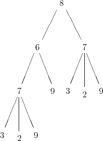

This chapter contains two advanced topics whose relationship is more technical than conceptual.
The Mathematica code and the C++ code both attach numbers to the polynomials which occur in the running of the GB algorithm. While these numbers are not externally visible at least in the commands described so far, they can be accessed by the user and are quite useful. One feature is that they can save typing time for the user who chooses to select or deselect relations in later runs of NCMakeGB. Also, if one is running the C++ version of the code, this will save considerable computer time because the C++ version of the code only has to send a number rather than the full polynomial to the Mathematica session. This time can be very significant when the polynomial has a large number of terms. See also section 29.2. Recall the Option ReturnRelationsToMma → False for NCMakeGB stops the partial GB calculated by the C++ program from transferring the answer back to Mathematica. This is the typical prelude to a “play by numbers ” session.
Recall the option ReturnRelationsToMma→ False for NCMakeGB stops the results from the NCMakeGB command from being returned to Mathematica. This is typically the first step in “playing by numbers”.
We now continue with the demo from Subsection
In[14]:= WhatAreNumbers[]
Out[14]= {1, 2, 3, 4, 5, 6, 7, 8, 9, 10, 11} In[15]:= ColumnForm[ WhatIsHistory[Out[14]] ] Out[15]= {1, x ** x -> a, {0, 0}, {}} {2, x ** y -> a, {0, 0}, {}} {3, x ** y -> b, {0, 0}, {}} {4, x ** x ** x -> b, {0, 0}, {}} {5, x ** a -> a ** x, {1, 1}, {}} {6, a ** y -> a ** x, {1, 2}, {5}} {7, x ** b -> a ** x, {1, 3}, {6}} {8, a ** x -> b, {1, 4}, {}} {9, a ** a -> b, {1, 4}, {1, 7, 8}} {10, b ** x -> b, {4, 1}, {1, 9}} {11, b -> a, {2, 3}, {}} |
We now describe what the above output means. Notice that each line is a number followed by a
replacement rule followed by a pair of numbers followed by a list of zero or more numbers. The tuples
mean
{relation number, relation, the 2 parents of thr relation, which rules relations were applied to the
S-polynomial}
For example, we say that x**x → a is the first replacement rule, x**y → a is the second replacement rule,etc. The third entry is the two parents of rule There are two cases:
Note that one can use history to do two things. The first thing is to see how relations are derived. The second is to find a smaller subset of the relations mentioned which will generate the same ideal. Note that in the above example, x**a-a**x lies in the ideal generated by x**x-a can be seen by referring to only the above history. Also, note that one can see that a **y - a **x lies in the ideal generated by {x **x - a, x **y - a and x **a - a **x}. This will prove very helpful in finding a subset of a particular set of a generated relations R which generates the same ideal as R. (See Section 30).
Consider the following tree on the nodes {2,3,6,7,8,9}.

Let us suppose that this tree represents the history corresponding to {p2,p3,p6,p7,p8,p9}. That is, p8 is generated as an s-polynomial from p6 and p7, p6 is generated as an S-polynomial from p7 and p9 and p7 is generated as a reduced S-polynomial. The polynomial generated is from p3 and p9 and a reduction step using p2 was used. In the notation of the history output, this would take the form
{
{2,p_2,{0,0},{}}, {3,p_3,{0,0},{}}, {6,p_6,{7,9},{}}, {7,p_7,{3,9},{2}}, {8,p_8,{6,7},{}}, {9,p_9,{0,0},{}}, } |
One sees from the picture that